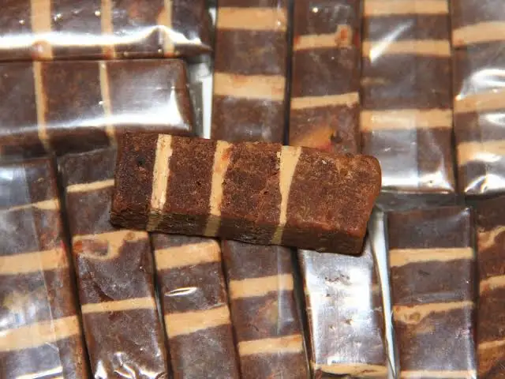
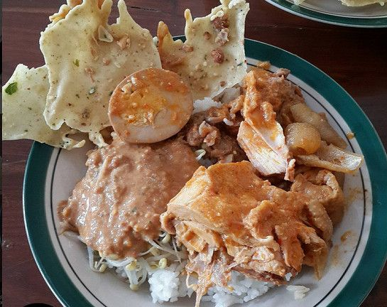
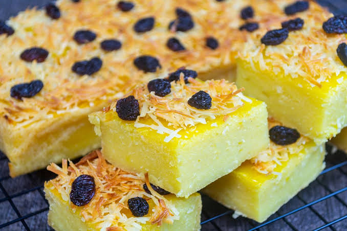
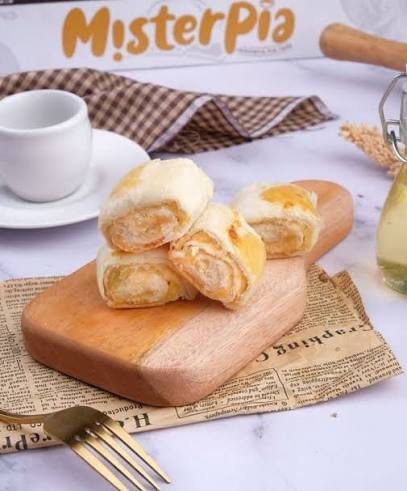

Suwar Suwir
Traditional Snack
Suwar-suwir is Jember's most iconic cassava tape-based snack. It is made by fermenting cassava, mixing it with sugar, and cooking it until it becomes firm and chewy, similar to a soft toffee-like texture.

Traditional Snack
Suwar-suwir is Jember's most iconic cassava tape-based snack. It is made by fermenting cassava, mixing it with sugar, and cooking it until it becomes firm and chewy, similar to a soft toffee-like texture.

Signature Dish
At first glance, the name sounds unusual because pecel is commonly associated with East Java while gudeg comes from Central Java traditions. Yet in Jember, the two flavors blend harmoniously without overpowering each other.

Soft Dessert
Unlike suwar-suwir, which has a dense texture, prol tape is a soft and moist cake. It is made from cassava tape, wheat flour, milk, margarine, and eggs, then baked until perfectly cooked.

Pastry
Pia tape offers a unique texture: the outer layer is crunchy like a typical pia pastry, while the inside stays soft and slightly moist thanks to the flavorful cassava tape filling.